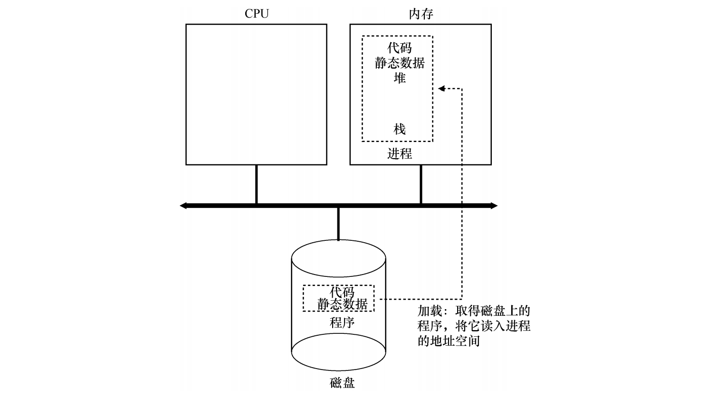
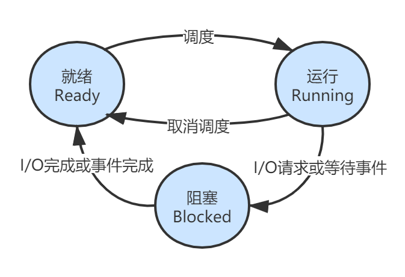
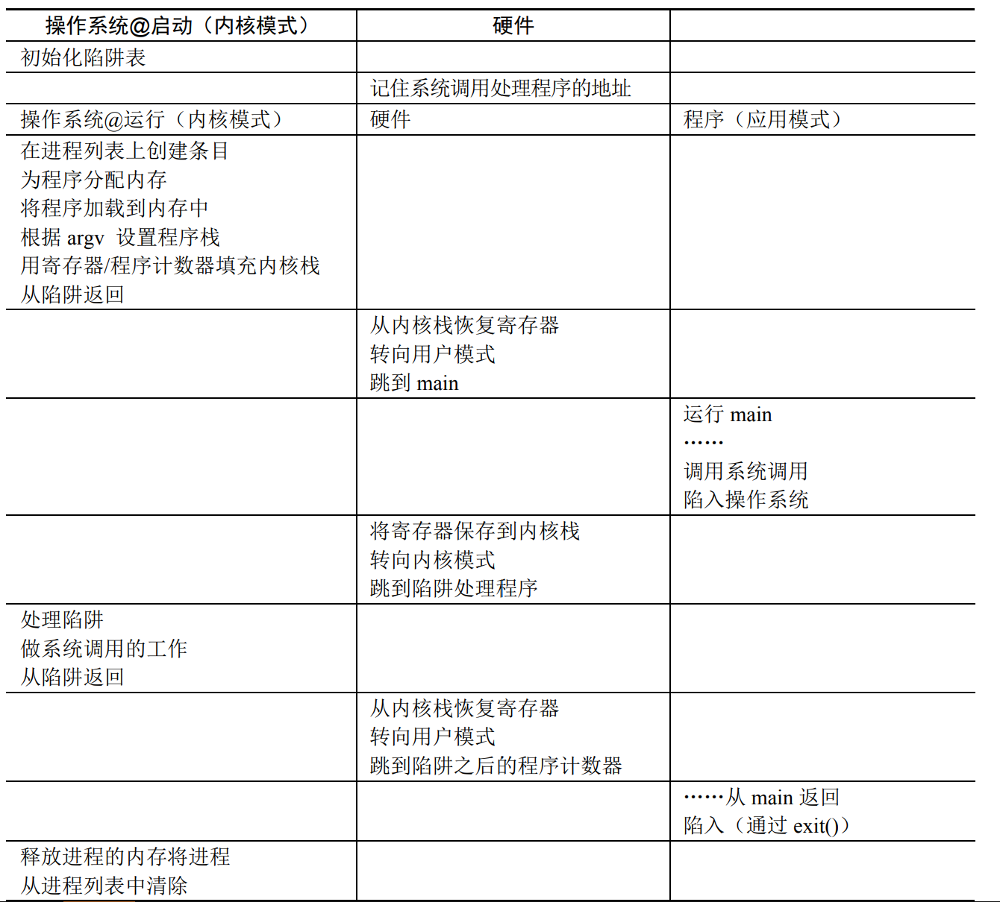
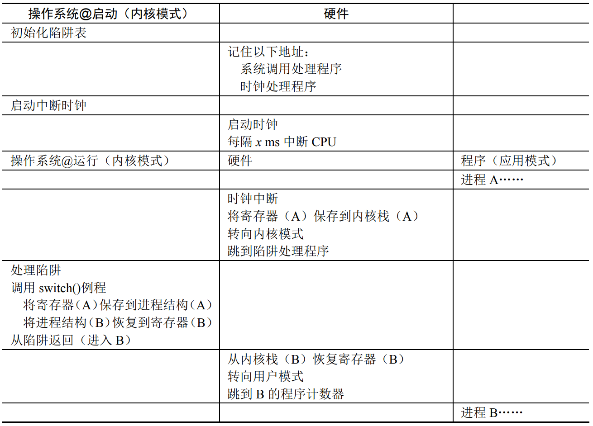

从程序员的角度来看，进程就是运行中的程序。从操作系统的角度来看，进程是一种操作系统用来进行资源分配的最小单位，进程是对 CPU、内存、外设的一个抽象的表示模型。虽然只有少量的物理 CPU 可用，但是操作系统却通过进程提供了几乎有无数个 CPU 可用的假象。
抽象：进程
操作系统为正在运行的程序提供的抽象，就是所谓的进程。为了理解构成进程的是什么，我们必须理解它的机器状态 (machine state)：程序在运行时可以读取或更新的内容。具体而言，一个进程的机器状态涉及到 CPU、内存和外设。
- 指令存在内存中，正在运行的程序读取和写入的数据也在内存中。因此进程可以访问的内存（称为地址空间，address space）是该进程的一部分。
- 进程的机器状态的另一部分是寄存器。许多指令明确地读取或更新寄存器，因此它们对于执行该进程很重要。例如，程序计数器 (Program Counter，PC) 告诉我们程序当前正在执行哪个指令。
- 程序也经常访问持久存储设备。因此进程需要包含此类 I/O 信息，例如当前打开的文件列表。
程序 vs 进程
程序如何转化为进程？具体来说，操作系统如何启动并运行一个程序？
操作系统运行程序必须做的第一件事是将代码和所有静态数据（例如初始化变量）加载 (load) 到内存中，加载到进程的地址空中。程序最初以某种可执行格式驻留在磁盘（或固态硬盘 SSD）上。因此，将程序和静态数据加载到内存中的过程，需要操作系统从磁盘读取这些字节，并将它们放在内存中的某处。

在早期的（或简单的）操作系统中，加载过程在运行程序之前会全部完成，而现代操作系统使用惰性加载机制，即程序执行期间需要加载的代码或数据片段才会加载，要真正理解代码和数据的惰性加载是如何工作的，必须更多地了解分页和交换的机制，这是我们将来讨论内存虚拟化时要涉及的主题。
将代码和静态数据加载到内存后，操作系统在运行此进程之前还需要执行其他一些操作。必须为程序的运行时栈 (run-time stack) 分配一些内存。C 程序使用栈存放局部变量、函数参数和返回地址。操作系统也可能为程序的堆 (heap) 分配一些内存。在 C 程序中，堆用于显式请求的动态分配数据。程序通过调用 malloc()来请求这样的空间，并通过调用 free()来明确地释放它。数据结构（如链表、散列表、树和其他有趣的数据结构）需要堆。起初堆会很小。随着程序运行，通过 malloc()库 API 请求更多内存，操作系统可能会参与分配更多内存给进程，以满足这些调用。
操作系统还将执行一些其他初始化任务，特别是与输入/输出 (I/O) 相关的任务。例如，在 UNIX 系统中，默认情况下每个进程都有 3 个打开的文件描述符 (file descriptor)，用于标准输入、输出和错误，这些描述符让程序轻松读取来自终端的输入以及打印输出到屏幕。
通过将代码和静态数据加载到内存中，通过创建和初始化栈以及执行与 I/O 设置相关的其他工作，OS 现在终于为程序执行搭好了舞台。然后它有最后一项任务：启动程序，在入口处运行，即 main()。通过跳转到 main() 例程，OS 将 CPU 的控制权转移到新创建的进程中，从而程序开始执行。
进程状态
既然已经了解了进程是什么，以及它大致是如何创建的，让我们来谈谈进程在给定时间可能处于的不同状态 (state)。简而言之，进程的三个基本状态为：
- 就绪 (Ready)：在创建过程之后，该过程进入就绪状态，即该过程被加载到主存储器中。此处的进程已准备就绪，可以运行，并且正在等待获取 CPU 时间以执行该进程，就绪进程将维护在一个队列中。
- 运行 (Running)：进程获得 CPU 时间片，真正开始运行。
- 阻塞 (Blocked)：一个进程正在等待某一事件 (例如请求 I/O 或等待 I/O 完成等) 而暂时停止运行，这时即使把处理机分配给进程也无法运行，故称该进程处于阻塞状态。

为了完整性，有时会定义新建 (New/Create) 以及终止 (Terminated) 两个额外的状态。
支持虚拟内存的系统中的进程可以使用两个其他状态，在这两种状态下，进程都存储在辅助存储器（通常是硬盘） 上。
- 挂起就绪 (Suspended Ready)
- 挂起阻塞 (Suspended Blocked)
简单的理解，当进程就绪或阻塞时，将会加入到一个队列，如果这个队列实际存在物理内存中，则是正常的状态；如果这个队列实际存在于硬盘上，则会附加一个挂起的标志，表示当前进程已经不在内存中。

数据结构
操作系统是一个程序，和其他程序一样，它有一些关键的数据结构来跟踪各种相关的信息。例如，
- 记录某个进程信息的数据结构
- 为所有就绪的进程保留某种进程列表
- 以某种方式跟踪被阻塞的进程
以下展示了 xv6 内核中每个进程的信息类型
1 | // the registers xv6 will save and restore to stop and subsequently restart a process |
除了一些常规进程信息，寄存器上下文 (context) 需要额外注意一下：对于不运行的进程，context 将保存其寄存器的内容。当一个进程停止时，它的寄存器将被保存到这个内存位置，通过恢复这些寄存器（将它们的值放回实际的物理寄存器中），操作系统可以恢复运行该进程，这称为上下文切换。
“真正的”操作系统中存在类似的进程结构，如 Linux、macOS X 或 Windows。通常称之为进程控制块 (Process Control Block, PCB)，PCB 是计算机操作系统用来存储有关进程的所有信息的数据结构，每个进程都有一个 PCB 结构。
- 创建 (初始化或安装) 进程后，操作系统将为其创建一个相应的进程控制块。
- 在进程状态转换期间，将更新 PCB 中的信息（寄存器上下文）。
- 当进程终止时，其 PCB 返回到从中提取新 PCB 的池中。
PCB 的作用是使一个在多道程序环境下不能独立运行的程序(含数据)，成为一个能独立运行的基本单位，一个能与其它进程并发执行的进程。PCB 必须保存在受到保护的内存区域中，在某些操作系统中，PCB 放置在进程内核栈的开头。
在 Linux 中，PCB 结构为 task_struct 结构体。
机制：受限直接执行
为了虚拟化 CPU，操作系统需要用某种方式让多任务共享物理 CPU，让他们看起来像是同时运行。基本思想很简单：运行一个进程一段时间，然后切换其他进程运行一段时间，如此轮换。通过以这种方式时分共享 CPU实现了虚拟化。
首先我们看看程序是如何在 CPU 上直接执行的，大致流程如下：
- 在进程列表中为其创建一个进程条目；
- 为其分配一些内存；
- 将程序代码 (可执行文件) 加载到内存中；
- 执行一些初始化任务 (如根据 argc/argv 设置程序栈)
- 找到入口点 (main() 函数) 并跳转到那里进行执行。
- (程序代码) 执行 main() 代码，并通过 return 返回。
- 释放进程内存，并从进程列表中清除该进程条目。
上述的过程很简单，除了加粗的过程是我们的程序可以决定的，其余过程均是操作系统完成的。在这个过程中，很明显有两个问题需要考虑：
- 操作系统如何确保程序不做我们不想让它做的事情。如果没有安全限制，一个恶意程序很快就可以破坏整个系统。
- 操作系统如何主动切换不同的进程。如果不能主动切换，程序代码永远不返回岂不是操作系统再也拿不回硬件的控制权。
由于有上述两个问题需要处理，因此操作系统虚拟化 CPU 的底层机制称为受限直接执行 (limited direct access)。
处理器模式
为了解决第一个问题，硬件提供了不同的执行模式来协助操作系统：
- 用户模式 (User mode) ：应用程序不能完全访问硬件资源。
- 内核模式 (Kernel mode) ：应用程序可以做任何事情，操作系统就运行在这种模式下。
如果用户需要执行某种特权操作 (磁盘读写、创建进程、分配更多内存、进程间通信) 怎么办？这依靠操作系统提供的系统调用 (System Call)。
要执行系统调用，程序必须执行一个特定的 trap 指令。这个指令会跳转到内核程序并且将特权级改为 Kernel mode，这样就可以执行任何指令了。执行完毕后，OS 会调用一个特定的 return-from-trap 指令，这个指令会将程序返回到用户程序并且将特权级改为 User mode。
操作系统在启动时会初始化一个 trap 指令表，用来记住每个系统调用的处理代码地址。当系统调用执行时，就会转到这个地址运行系统调用对应的程序。

进程间切换
如果一个进程在 CPU 上运行，这就意味着操作系统没有运行。如果操作系统没有运行，它便什么也不能做。像一个哲学问题，操作系统如何重新获得 CPU 的控制权 (regain control) ，以便它可以在进程之间切换？答案很简单：时钟中断 (timer interrupt)。时钟设备可以编程为每隔几毫秒产生一次中断。产生中断时，当前正在运行的进程停止，操作系统中预先配置的中断处理程序 (interrupt handler) 会运行。此时，操作系统重新获得 CPU 的控制权，因此可以做它想做的事：停止当前进程，并启动另一个进程。
当操作系统获得控制权之后，切换到哪个进程是由调度程序 (scheduler) 决定的，但如果决定进行切换，OS 就会执行一些底层代码，即所谓的上下文切换 (context switch)。操作系统要做的就是为当前正在执行的进程保存一些寄存器的值 (到它的内核栈) ，并为即将执行的进程恢复一些寄存器的值 (从它的内核栈)。
通过切换栈，内核在进入切换代码调用时，是一个进程 (被中断的进程) 的上下文，在返回时，是另一进程 (即将执行的进程) 的上下文。当操作系统最终执行 return-from-trap 时，即将执行的进程变成了当前运行的进程。至此上下文切换完成。

策略：进程调度
现在已经有了运行进程的底层机制——上下文切换，那么还需要一些上层策略来决定当发生切换时应该选择哪个进程进行切换，这称之为进程调度/CPU 调度 (CPU Scheduling)。
基本调度思想
先来先服务 (FCFS)
先到先服务 (First Come First Service, FCFS) 是最基本的算法，也称为先进先出 (FIFO) 。
最短任务优先 (SJF)
最短任务优先 (Shortest Job First, SJF) 的策略是：先运行最短的任务，然后是次短的任务，如此下去。
最短完成时间优先 (STCF)
最短完成时间优先 (Shortest Time-to-Completion First, STCF) 或抢占式最短作业优先 (Preemptive Shortest Job First, PSJF) 的策略是向 SJF 添加抢占，每当新工作进入系统时，确定剩余工作和新工作中谁的剩余时间更少，然后调度该工作。
轮转 (RR)
轮转调度 (Round Robin, RR) 的基本思想很简单：RR 在一个时间片 (time slice，有时称为调度量子，scheduling quantum) 内运行一个工作，然后切换到运行队列中的下一个任务，而不是运行一个任务直到结束。它反复执行，直到所有任务完成。因此，RR 有时被称为时间切片 (time-slicing) 。
时间片长度必须是时钟中断周期的倍数。因此，如果时钟中断是每 10ms 中断一次，则时间片可以是 10ms、20ms 或 10ms 的任何其他倍数。
总结
| 方法 | 是否抢占 |
|---|---|
| FIFO | 非抢占 |
| SJF | 非抢占 |
| PSJF/STCF | 抢占 |
| RR | 抢占 |
实用调度方法
多级反馈队列 (MLFQ)
多级反馈队列 (Multi-level Feedback Queue, MLFQ)
MLFQ 的两条基本规则。
- 规则 1：如果 A 的优先级 > B 的优先级，运行 A (不运行 B) 。
- 规则 2：如果 A 的优先级 = B 的优先级，轮转运行 A 和 B。
- 规则 3：工作进入系统时，放在最高优先级 (最上层队列) 。
- 规则 4a：工作用完整个时间片后，降低其优先级 (移入下一个队列) 。
- 规则 4b：如果工作在其时间片以内主动释放 CPU，则优先级不变。
- 规则 5：经过一段时间 S，就将系统中所有工作重新加入最高优先级队列。
- 规则 4：一旦工作用完了其在某一层中的时间配额 (无论中间主动放弃了多少次 CPU) ，就降低其优先级 (移入低一级队列) 。
MLFQ 有趣的原因是：它不需要对工作的运行方式有先验知识，而是通过观察工作的运行来给出对应的优先级。通过这种方式，MLFQ 可以同时满足各种工作的需求：
- 对于短时间运行的交互型工作，获得类似于 SJF/STCF 的很好的全局性能，
- 同时对长时间运行的 CPU 密集型负载也可以公平地、不断地稳步向前。
因此，许多系统使用某种类型的 MLFQ 作为自己的基础调度程序，包括类 BSD UNIX 系统、Solaris 以及 Windows NT 和其后的 Window 系列操作系统。
比例份额调度
比例份额 (proportional-share) 调度程序，有时也称为公平份额 (fair-share) 调度程序。比例份额算法基于一个简单的想法：调度程序的最终目标，是确保每个工作获得一定比例的 CPU 时间，而不是优化周转时间和响应时间。
彩票调度背后是一个非常基本的概念：彩票数 (ticket) 代表了进程 (或用户或其他) 占有某个资源的份额。一个进程拥有的彩票数占总彩票数的百分比，就是它占有资源的份额。
多处理器调度
目前为止都讨论的单处理器调度的算法，然而多处理器如今已经司空见惯。操作系统应该如何在多 CPU 上调度工作？会遇到什么新问题？已有的技术依旧适用吗？是否需要新的思路？
多处理器架构
单队列调度
多队列调度
Linux 多处理器调度
有趣的是，在构建多处理器调度程序方面，Linux 社区一直没有达成共识。一直以来，存在 3 种不同的调度程序：
- O(1) 调度程序：采用多队列，基于优先级（类似 MLFQ），随时间推移改变进程的优先级，然后调度最高优先级进程，来实现各种调度目标。
- 完全公平调度程序 (CFS)：采用多队列，CFS 是确定的比例调度方法（类似彩票调度）
- BF 调度程序 (BFS)：采用单队列，基于比例调度，但采用了其他方法。
目前 CFS 是 Linux 内核的默认调度程序。更多可以参考 Linux内核-CFS进程调度器。